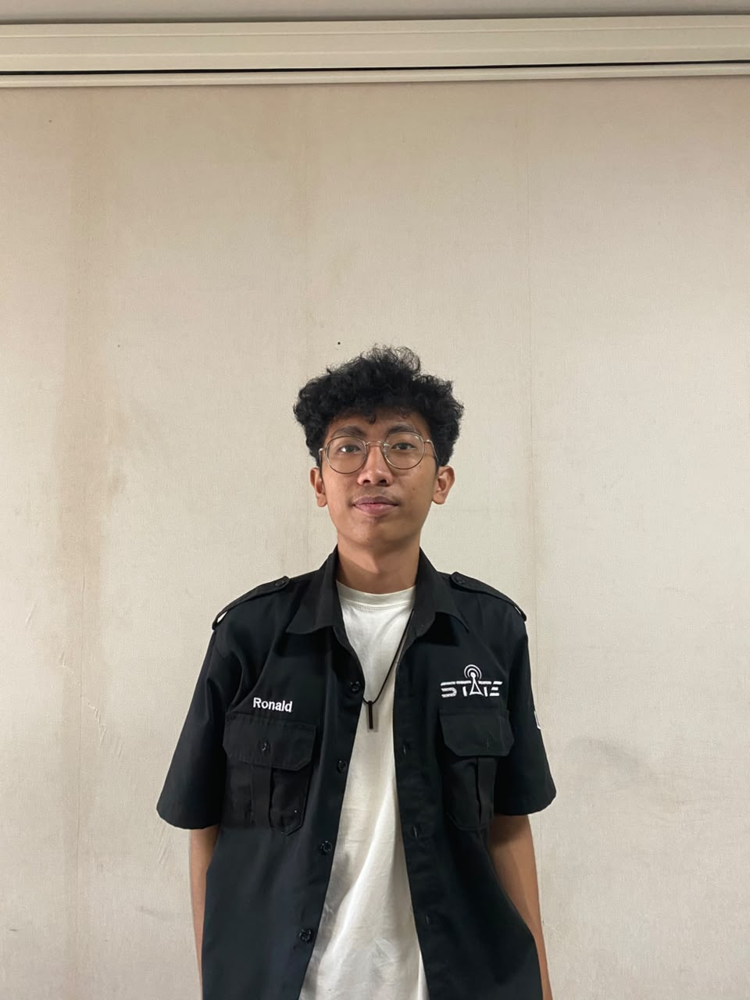
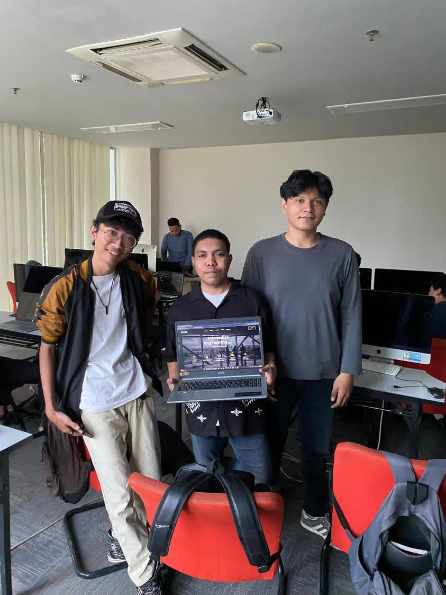
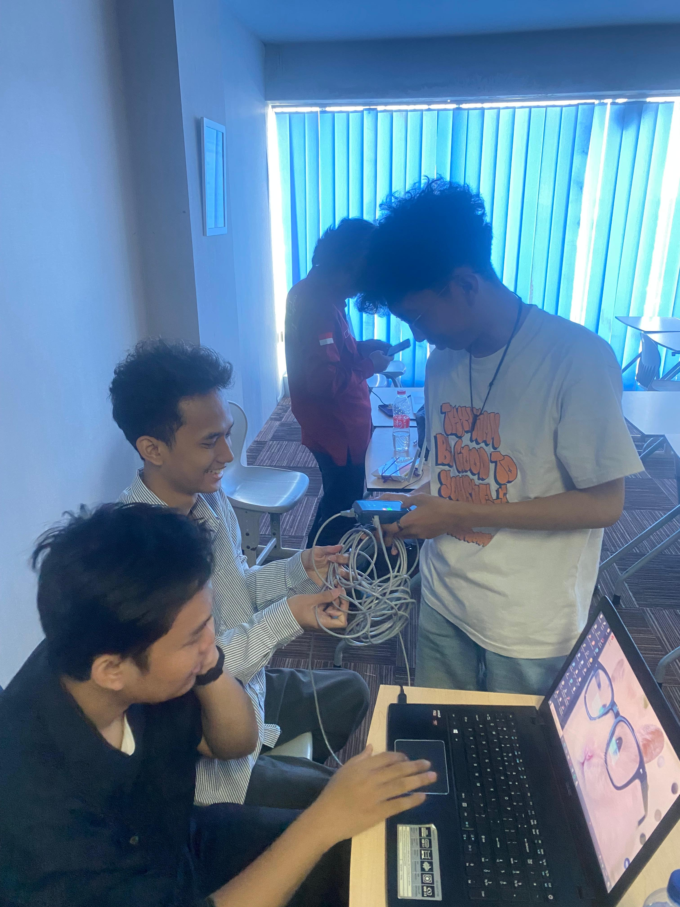
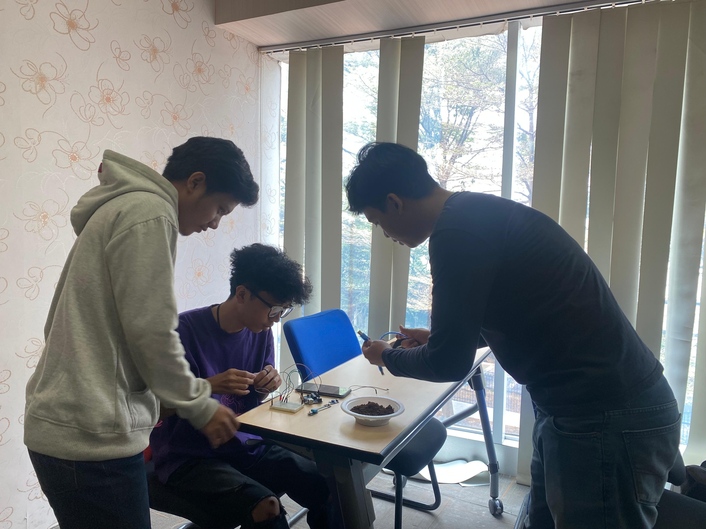

Web & Software
Ruang untuk mengeksplorasi pembuatan website dan software, dari ide hingga solusi digital yang mudah digunakan.
Membangun dengan tujuanHalo, selamat datang di ruang saya
Membangun solusi digital.
Menyelesaikan masalah.
Saya tertarik pada pengembangan web dan software, serta troubleshooting dan IT support. Portofolio ini akan menjadi tempat untuk berbagi fokus, proses, dan karya saya.
Arah yang saya tekuni
Saya ingin menggabungkan ketertarikan pada teknologi dengan cara berpikir yang terstruktur untuk memahami dan menyelesaikan masalah.
Ruang untuk mengeksplorasi pembuatan website dan software, dari ide hingga solusi digital yang mudah digunakan.
Membangun dengan tujuanKetertarikan untuk menelusuri sumber masalah teknis, memahami penyebabnya, dan mencari langkah penanganan yang tepat.
Memahami sebelum menanganiMengeksplorasi machine learning, membangun solusi berbasis AI, dan merancang AI agent yang membantu pekerjaan secara adaptif dan efisien.
Membangun AI yang membantuTentang saya
Saya sedang membangun fondasi di bidang teknologi dengan ketertarikan pada pengembangan solusi digital dan pemecahan masalah teknis.
View Resume
Cara saya bertumbuh
Saya percaya proses belajar teknologi perlu diimbangi dengan cara berpikir yang terstruktur: memahami konteks, menelusuri penyebab, lalu membangun solusi yang dapat digunakan.
View ProjectsEducation
Experience
Pengalaman dalam mengembangkan proyek web, menangani kebutuhan teknis, dan bekerja sama dalam menyelesaikan tantangan digital.
Lihat ExperienceStack & showcase
Teknologi, proyek, dan pencapaian yang sedang saya kembangkan dalam perjalanan belajar dan membangun solusi digital.
Semantic structure
Responsive interface
Interactive experience
Utility-first styling
Component thinking
Backend foundation
Automation & logic
Version control
Code collaboration
Service integration
Relational database
Application programming
Systems programming
Visual design
Featured project
Website portfolio personal dengan nuansa Space Glassmorphism untuk menampilkan karya dan proses belajar.
Concept project
Eksplorasi dashboard untuk membantu menata laporan masalah teknis dan alur penyelesaiannya.
Certificates
Sertifikat dan dokumentasi pembelajaran akan ditambahkan setelah materi siap dibagikan.
Coming step by step
Experience 01
Berlatih membangun dan mempresentasikan solusi web melalui kolaborasi tim dan proses pengembangan yang terarah.
Kolaborasi & pengembangan web
Experience 02
Mempraktikkan pemasangan dan penanganan kabel jaringan untuk memahami kebutuhan teknis secara langsung.
Praktik & troubleshooting
Experience 03
Mengeksplorasi perangkat dan rangkaian Arduino bersama tim untuk menghubungkan ide dengan prototipe nyata.
Eksperimen & prototypingPratinjau gambar Experience
Let's connect
Punya ide, pertanyaan, atau ingin berdiskusi tentang solusi digital? Kirim pesan dan mari mulai percakapannya.
Community space